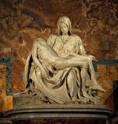
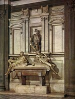
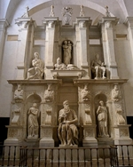

Michelangelo
Cliquez sur les images pour les agrandir
1 
2 
3 
4 
5 
6 
7 
8 
9 
10 
11 
12 
13 
14 
15 
16 
17 
18 
19 
20 
21 
22 
23 
24 
25 
26 
Michelangelo Buonarroti, dit Michelangelo
(Caprese 1475 - Rome 1564)

Introduction
L'un des grands génies artistiques de l'humanité, il a résumé et accompli dans leur plénitude toutes les quêtes d'absolu et de beauté de la haute Renaissance, de façon moins sereine que Raphaël, mais avec un dynamisme et un sens du drame qui ouvraient de nouvelles perspectives.
Michelangelo Buonarroti naquit d'une famille ruinée qui prétendait avoir une ascendance aristocratique et qui vint s'établir à Florence. Les dispositions du jeune garçon incitèrent à le confier à l'atelier du peintre Ghirlandaio, alors le fresquiste le plus réputé. Laurent de Médicis, le Magnifique, remarqua l'apprenti, lui ouvrit les jardins de son palais, son Académie et le mit ainsi en contact avec sa collection d'antiques ; Michel-Ange fréquenta là un cercle d'intellectuels raffinés – Politien, Marsile Ficin, Pic de La Mirandole – qui eurent une profonde influence sur sa formation spirituelle et son ambition d'artiste créateur. L'Académie était dirigée par le sculpteur Bertoldo di Giovanni (vers 1420-1491), spécialisé dans le bronze. Or, Michel-Ange fut avant tout un sculpteur sur marbre ; l'étude des antiques semble donc avoir compté par-dessus tout dans sa formation. Il ne se passait pas de jour, à cette époque, qu'on ne découvrît à la suite de fouilles quelque morceau important enfoui dans le sol italien : par exemple, au début du XVIe s., le fameux groupe du Laocoon. À la sculpture antique, Michel-Ange demanda la science de la composition, du groupement des personnages, de l'harmonieuse beauté du corps humain, du jeu expressif de la musculature, mais il y ajouta une recherche de mouvement et un approfondissement psychologique et moral. Le corps humain devenait un langage par lequel l'artiste faisait sentir les émotions et les passions de l'homme, puis, se haussant au plan métaphysique, exprimait tout le tragique de la destinée humaine en face de son créateur.
On a beaucoup disserté sur la signification et l'interprétation néoplatonicienne de l'œuvre de Michel-Ange, jusqu'à vouloir en expliquer les moindres détails par cette philosophie, sans doute de façon quelque peu excessive. Certes, Michel-Ange fut un artiste conscient de son importance et de la valeur de message de son œuvre. Il est certain qu'il demeura toute sa vie profondément croyant, même si, comme beaucoup d'hommes de la Renaissance, il fut tenté par des rêves syncrétistes. L'Antiquité, il la vivait intensément dans ses œuvres retrouvées et dans son esprit, et il ne craignait pas de mêler des éléments païens à son univers chrétien. On se souviendra, par ailleurs, qu'il vécut en des temps particulièrement troublés : ce Florentin vit les régimes politiques se succéder à un rythme rapide dans sa ville bien-aimée, le trône de saint Pierre occupé par des pontifes scandaleux (Alexandre VI Borgia), veules ou cupides, la foi vaciller chez beaucoup et l'orthodoxie récusée en même temps que le principe d'autorité. On l'a parfois accusé d'être allé jusqu'aux limites de l'hérésie, et, assurément, Michel-Ange fréquentait des milieux incertains. Malgré des déchirements dont ses ouvrages portent les stigmates, il ne transigea pas. Les événements instables bouleversèrent considérablement ses projets et sa carrière ; son caractère difficile, son orgueil ombrageux, ses sautes d'humeur, qui le faisaient passer de l'exaltation au découragement et au désespoir, retentirent sur l'accomplissement de son œuvre, qui, dans une large mesure, se présente comme inachevée, comme une sorte de grandiose échec, surtout dans le domaine de la sculpture. Or, Michel-Ange se sentait et se voulait avant tout un sculpteur. C'est la sculpture qu'il considérait comme le plus noble de tous les arts, en partie parce que c'était le plus difficile. Devant le bloc de marbre dont il fallait tirer une forme vivante, il connut la lutte pathétique du créateur jamais satisfait. Par sentiment de la faillite, il lui arriva souvent de ne pas conduire son travail jusqu'à la perfection, jusqu'au polissage qui donne au marbre son éclat et son aspect précieux, laissant en certaines parties subsister les traces du ciseau, de la « gradine » en une matité rugueuse et parfois ne dégageant qu'à peine la forme désirée. Un certain romantisme s'est emparé de ce non finito pour lui faire exprimer les plus secrets tourments du maître et le charger d'une signification suprême, alors que la vérité est beaucoup plus simple : Michel-Ange, par lassitude ou par rage de ne pas obtenir ce qu'il voulait, refusait d'aller plus avant. Il a toujours traité avec un sens très scrupuleux de la finition les ouvrages qu'il considérait comme terminés. Mais cette bruttezza a commis des ravages dans les temps qui ont suivi, et Michel-Ange, par cette répugnance de plus en plus fréquente avec l'âge à aller jusqu'au bout, est devenu le symbole de la lutte sans fin du génie humain contre l'aveugle fatalité, une sorte de nouveau Sisyphe.
Débuts et premiers chefs-d'œuvre
C'est au début de sa carrière, alors qu'il était encore à l'« Académie », qu'il convient de placer un bas-relief encore confus, le Combat des centaures et des Lapithes (1) (Florence, Casa Buonarroti), et en contrepoint – paganisme-christianisme –, la Vierge à l'escalier (2) (Florence, Casa Buonarroti) pleine de sérénité, ou il reconnaît, dans la technique du relief, sa dette envers son grand prédécesseur Donatello. Dès le début, Michel-Ange oscille donc entre une tendance dynamique et dramatique et une tendance antithétique, encline à la douceur et à une certaine suavité, ou l'on perçoit des échos de Léonard de Vinci. On a retrouvé une autre œuvre de jeunesse, un crucifix en bois commandé par le prieur de Santo Spirito à Florence, dont certains discutent l'authencité ; ce serait la seule sculpture à laquelle l'artiste aurait ajouté une polychromie, procédé auquel il se refusera désormais, car il préfère garder la candeur brillante ou mate du marbre. En 1492, à la mort de Laurent le Magnifique, Michel-Ange quitte le palais Médicis et, en 1494, visite Venise et Bologne ; il s'exerce à des études anatomiques sur des cadavres. De retour en 1495 à Florence, il sculpte pour un cardinal un Cupidon endormi, aujourd'hui disparu, mais qui, en raison de sa perfection, fut pris pour un antique. Le cardinal engage le jeune sculpteur à faire le voyage de Rome, et l'atmosphère pesante de Florence ajoute à ce besoin d'évasion. Il semble donc à ce moment que Michel-Ange s'oriente vers une carrière aisée de sculpteur, dans un registre assez ouvert, mais ou la mythologie à la mode impose les sujets. Cependant, à Bologne, il a été engagé pour collaborer à la terminaison de l'« arca » de San Domenico, et ces petites statuettes d'un ange agenouillé, de saint Pétrone et de saint Procul révèlent l'influence d'un maître du début du quattrocento, Iacopo della Quercia, dont Michel-Ange reprend les plis boursouflés et la passion contenue. C'est à la demande d'un cardinal français que Michel-Ange exécute à Rome son premier grand chef-d'œuvre, un de ses ouvrages les plus populaires, la Pietà de Saint-Pierre (3), défigurée par un attentat en 1972. Le thème et la composition sont insolites, d'origine nordique et non italienne, mais l'artiste tire du marbre un poème exquis et bouleversant. Le pur visage de la Vierge (représentée curieusement très jeune, du même âge que le supplicié) s'incline avec grâce sur le corps abandonné, mais non disloqué d'un Christ beau dans la mort comme un Adonis et dont l'anatomie harmonieuse est mise en valeur par le drapé admirable du grand manteau détaché par la mère douloureuse comme pour en faire un suaire. Ce chef-d'œuvre juvénile, ou éclatent la virtuosité du sculpteur et sa sensibilité frémissante, est aussi la seule sculpture que celui-ci ait signée orgueilleusement, sur la lanière qui barre en diagonale la poitrine de la Vierge. À peu près au même moment ou il sculpte cette pieuse image, Michel-Ange travaille à la plus païenne de ses figures, un extraordinaire Bacchus ivre (4) (Florence, musée du Bargello), jeune éphèbe titubant dont se moque, dans son dos, un ironique satyreau. L'artiste dépasse dès lors, par l'ardeur, par l'intensité de la vie, ses modèles antiques.
Si les statuettes pour l'autel Piccolomini à la cathédrale de Sienne sont controversées, l'hypothèse a été faite que la Vierge de l'église Notre-Dame de Bruges (5) aurait été primitivement destinée à cet ensemble et que sa date d'exécution se place vers 1500. Le bel ovale du visage prend ici une expression boudeuse. Ce même thème de la Vierge à l'Enfant inspire au sculpteur, sous la forme toujours à la mode en Italie du tondo, composition de forme circulaire, deux œuvres charmantes ou il explore (pour n'y plus guère revenir) les possibilités du bas-relief, le tondo Pitti (6) (Bargello) et le tondo Taddei (7) (Londres, Royal Academy), du nom des familles qui en ont passé commande. À la même époque, Michel-Ange se souvient qu'il a appris à peindre et donne sous la même forme circulaire le tondo Doni (8) (Florence, Offices), représentant une Sainte Famille avec un curieux effet de raccourci pour la Vierge accroupie et, à l'arrière-plan, des faunes nus dont la présence dans cette scène religieuse s'expliquerait de façon allégorique (le paganisme cédant la place au christianisme ?). Dans cette première œuvre peinte connue, Michel-Ange montre un étonnant sens du modelé et une recherche originale dans les tonalités. C'est cependant un autre chef-d'œuvre de sculpture qui suivra. De retour à Florence, ou une secrète nostalgie le ramènera sans trêve, Michel-Ange tire d'un bloc de marbre, d'abord destiné à une statue de la cathédrale, mais jugé trop mince et abandonné, un gigantesque David (9) (1501-1504 ; la statue a plus de 4 m de haut) dans une nudité héroïque, portant nonchalamment à l'épaule sa fronde, image épanouie de jeunesse victorieuse ou l'artiste a surmonté avec brio le manque d'épaisseur du bloc. Le David obtint l'honneur d'être placé devant le Palazzo Vecchio (aujourd'hui à l'Accademia). La renommée de Buonarroti fait de celui-ci dès lors l'artiste le plus en vue de Florence. En 1503, la Seigneurie lui commande une grande fresque pour décorer la salle du Conseil : Michel-Ange y traite en groupes tumultueux la Bataille de Cascina, disparue aujourd'hui. En même temps, il se voit confier la tâche prestigieuse de sculpter douze apôtres plus grands que nature pour la cathédrale. Il ne reste de ce grand projet que le Saint Matthieu (10) mal dégagé de sa gangue (Florence, Accademia).
En 1505, le pape, qui est alors le fougueux Jules II (Giuliano Della Rovere), appelle Michel-Ange à Rome et le charge de faire son tombeau. C'est le début d'une longue et douloureuse entreprise qui, comme la chapelle Médicis à Florence, poursuivra et obsédera l'artiste pendant toute sa vie sans trouver une solution digne du dessein initial. Pour le tombeau du pontife, on envisage l'église Saint-Pierre, qui est alors en pleine reconstruction, et même une place d'honneur sous la coupole prévue. Mais Michel-Ange s'attire dès ce moment la haine opiniâtre du grand architecte Bramante. Cet antagonisme le poursuivra longtemps et n'arrangera pas ses entreprises. Jules II lui-même change d'idées, commande à Buonarroti réticent une statue colossale de lui-même, en bronze, destinée à orner la façade de San Petronio de Bologne et à symboliser la sujétion de la ville au pape. Cette œuvre en bronze, exceptionnelle dans l'œuvre de l'artiste, connaîtra le sort des manifestes politiques : la première rébellion venue, elle sera renversée et fondue.
Le plafond de la Sixtine
En 1508, nouvelle idée de Jules II. Celui-ci charge l'artiste, dont il avait deviné le génie, de décorer le plafond de la chapelle Sixtine. Michel-Ange obtiendra de compléter ce programme en peignant aussi des fresques dans les lunettes des fenêtres et dans les écoinçons. Sur les murs, des fresques antérieures évoquaient des scènes de l'Évangile et de la vie de Moïse. Le programme qui échoit à Buonarroti comprend l'histoire de l'Humanité depuis la Création jusqu'à Moïse, c'est-à-dire symboliquement le monde d'avant la faute, puis l'attente anxieuse de la Rédemption. Sur le plafond lui-même, les fresques comportent neuf grands tableaux rectangulaires représentant la Création, le péché originel et l'histoire de Noé (11). Les scènes de la Création sont, à juste titre, les plus célèbres, notamment celles de la création de l'homme et de la femme, ou l'artiste, avec un nombre réduit de personnages, confère à ces tableaux une intensité dramatique et une grandeur épique, mais aussi une profondeur d'émotion inégalable. On ne peut oublier le regard à la fois hésitant et ébloui du premier homme, non plus que le geste si auguste et si délicat du Créateur effleurant à peine son doigt afin de lui insuffler la vie (12). Il est évident que Michel-Ange a rompu avec les images traditionnelles pour créer vraiment une cosmogonie personnelle, ou il exprime toute la force de sa foi et toute la passion de son tempérament. Il crée aussi un canon qui lui est propre. Corps aux musculatures hypertrophiées, inhumaines et presque monstrueuses parfois, mais c'est bien une histoire au-dessus de l'humanité normale qu'il évoque à travers ces formes démesurées et fulgurantes. Sur la corniche encadrant les scènes bibliques, des adolescents nus sont assis, dans des attitudes variées, le regard attentif : ce sont les ignudi (13), créations originales de Michel-Ange, ou il a mis toutes ses ardentes recherches de la beauté du corps humain, intermédiaires sans justification scripturaire entre le ciel et la terre, archétypes de nos passions et de nos facultés. Ces êtres mystérieux, idéaux, en quête d'une identification au divin se rapportent sans doute aux théories néoplatoniciennes dont Michel-Ange était imbu. Plus bas, entre les lunettes et encadrées de pilastres feints soutenus par des putti traités en atlantes, douze figures assises évoquent alternativement prophètes et sibylles. Là encore, la malédiction de l'humanité est atténuée par l'annonce du rachat, mais la gravité, la sévérité des personnages ne laissent guère filtrer de lueur d'espérance dans ce mur compact d'angoisse et de tourment. La grâce est presque toujours absente, même des figures féminines ; l'énorme sibylle de Cumes (14), par exemple, avec ses bras noueux de lutteur de foire, inspire plutôt une épouvantable répulsion. Dans les pendentifs aux quatre angles se trouvent des épisodes de l'Ancien Testament (David et Goliath, Judith et Holopherne...) se rapportant à des sauvetages miraculeux d'Israël, peuple élu. Dans les triangles sphériques au-dessus des fenêtres, des personnages un peu recroquevillés sur eux-mêmes appartiendraient à des familles païennes déchues en dehors de la Révélation ; enfin, dans les lunettes, assis de part et d'autre de ces fenêtres, apparaissent des ancêtres du Christ (15) : un pas de plus vers la Rédemption.
Du tombeau de Jules II à la chapelle des Médicis
Michel-Ange est accaparé par l'immense labeur du plafond de la Sixtine jusqu'en 1512. L'année suivante, Jules II meurt et est remplacé par un Médicis, Léon X, qui n'aime pas Michel-Ange, soupçonné d'être républicain. L'artiste se remet au tombeau du pontife disparu. Au début, ce devait être un édifice indépendant, de forme pyramidale, avec, au niveau inférieur, des statues de captifs et de victoires symbolisant les luttes de la vie, mais aussi les arts libéraux. Au milieu, puissamment assis, Moïse et saint Paul, c'est-à-dire l'Ancienne et la Nouvelle Loi, et au sommet le pape gisant, soutenu par des anges qui l'introduisent dans la gloire éternelle. Le nouveau contrat de 1513 avec les héritiers modifie le schéma en le simplifiant, réduit le nombre des figures et adosse le monument au mur. À cette seconde version se rattachent les deux Esclaves (16) du musée du Louvre, qui se débattent dans leurs liens avec un air de souffrance qui n'est pas seulement physique. Ces deux sculptures sont d'une puissance expressive rarement égalée. L'artiste commence aussi le terrible Moïse, à la musculature énorme et au regard fascinant et furieux, d'une force impérieuse et surhumaine. Un nouveau changement, en 1516, entraîne une réduction de la taille des captifs : ce sont les statues ébauchées, mais déjà si envoûtantes.
Le tombeau de Jules II s'achemine vers un immense naufrage. Cependant, en 1517, Michel-Ange se lance avec enthousiasme dans une nouvelle commande, la façade de l'église médicéenne de San Lorenzo à Florence (17), grandiose projet à la fois d'architecture et de sculpture, qui sombre lui aussi. Léon X lui confie vers 1520 la construction et la décoration de la chapelle funéraire qui, greffée sur la même église, abritera deux monuments à la mémoire de Julien de Médicis (18), duc de Nemours, et de Laurent (19), duc d'Urbino, tous deux grands défenseurs du trône pontifical. L'artiste dépasse le programme de glorification des Médicis en lui donnant une signification plus grandiose et générale, ou l'on reconnaît une fois de plus les idées néoplatoniciennes dont il s'était nourri durant sa jeunesse et sa tendance à s'élever toujours aux grands problèmes de l'humanité. L'architecture rappelle dans sa structure les sacristies du quattrocento. On y retrouve notamment le parti de souligner en pierre plus sombre, la pietra serena, les lignes architectoniques, mais l'on y sent une puissance et un dynamisme nouveaux. Les monuments funéraires occupent deux des côtés du quadrilatère et adoptent le même schéma pyramidal : dans une niche rectangulaire sont assises les deux statues des princes commémorés, en réalité des portraits idéalisés, héroïsés, portant l'un et l'autre l'armure des capitaines romains : Julien, juvénile, énergique, représente l'Action, le visage en pleine lumière. Le regard de Laurent, au contraire, reste plongé dans l'ombre que projette le casque ; Laurent médite, la main soutenant le bas de la figure, soucieux, mystérieux, symbole de la Pensée qui replie l'homme sur lui-même. Aux pieds de chacun d'eux, un sarcophage dont le couvercle se compose de deux enroulements, sur les rampants desquels quatre figures nues sont couchées de la façon la plus incommode, les membres comme écartelés ou se croisant dans des positions malaisées, le visage ravagé par la morosité et la souffrance – exprimant les tourments de l'âme humaine au cours de la vie. Ces figures sont les allégories des quatre parties de la journée ou, si l'on veut, du temps qui passe : le Jour, la Nuit, l'Aurore, le Crépuscule, personnages alternativement masculins et féminins, dont certains présentent encore des surfaces « non finies ». Il est vrai que ce n'est pas Michel-Ange qui mit les monuments en place et qu'une fois de plus cet ample programme connut des vicissitudes et des mutilations. Michel-Ange prévoyait notamment, à l'étage inférieur, des figures de Fleuves couchées à l'antique, qui ne furent même pas ébauchées (on conserve à l'Accademia de Florence un modèle en argile), et aussi des fresques dans les lunettes supérieures. Sur un troisième côté de la chapelle se dresse la Vierge Médicis, qui essaye de retenir la turbulence de l'Enfant Jésus assis sur ses genoux et n'a plus la suavité mélancolique des Vierges du Vatican et de Bruges, mais une sorte de véhémence dans la tristesse se traduisant par sa construction plus heurtée, son drapé plus houleux et une sorte de sauvagerie dans le visage.
Surviennent cependant des temps de trouble et de violence. Un pouvoir populaire s'installe à Florence ; en 1527, c'est le sac de Rome, et la civilisation humaniste de la Renaissance semble s'écrouler sous le coup de nouveaux Barbares. L'artiste ressent profondément ces événements, qui s'ajoutent à ses drames intérieurs et aux multiples entraves dont son œuvre est victime. En 1530, Florence se rend au pape Clément VII. Bientôt, Michel-Ange ne se sent plus chez lui à Florence, que, dès 1534 (ayant à peine achevé les tombeaux médicéens), il abandonnera presque définitivement pour Rome. Là le monument de Jules II (20) est devenu pour lui un cauchemar et, en 1532, l'artiste se résout de guerre lasse à un arrangement assez pitoyable : des disciples médiocres participent à la finition du monument et à sa mise en place dans la petite église San Pietro in Vincoli, cadre hors de proportions. À deux nouvelles statues du monument définitif, Michel-Ange ne travaille que partiellement : Rachel, qui symbolise la vie contemplative, et Lia, la vie active, toutes deux marquées par une tendance au classicisme, auquel se rallie l'artiste vieillissant. Il n'y a plus d'esclaves, et le groupe de la Victoire, destiné primitivement à ce grand ensemble, reste dans l'atelier (aujourd'hui au Palazzo Vecchio de Florence) ; sa construction savante « en flamme » inspirera toute la sculpture maniériste. Enfin, les proportions du Moïse sont irrémédiablement faussées par l'emplacement, de plain-pied, qui ne lui convient pas.
« Le jugement dernier », les travaux d'architecture
L'humeur assombrie, le pessimisme grandissant de l'artiste se trahissent dans la grande fresque du Jugement dernier, accomplie de 1536 à 1541 à la demande de Paul III Farnèse pour couvrir le mur du fond de la chapelle Sixtine. Les tonalités sont plus foncées que dans les fresques du plafond ; le Christ-juge, qui revêt les apparences d'une sorte d'Apollon un peu épaissi, est rien moins que rassurant, et la plus grande partie de la Création semble vouée à un destin maudit. La composition, assez confuse, souffre enfin du voisinage du chef-d'œuvre de la maturité. Comme dans ses Pietà, c'est là encore un thème médiéval que reprend et amplifie Michel-Ange, avec en plus des souvenirs de Dante et de l'Antiquité (la barque de Caron). Les supplices de l'enfer révèlent une variété et une invention aussi morbides que les tympans romans du XIIe s. Les élus ont besoin de l'aide des anges et des saints pour se hisser péniblement au paradis. Ce grand ensemble a plus fait que tout le reste pour établir la réputation de « terribilità » de Michel-Ange. On sait, d'autre part, qu'au siècle suivant les nudités héroïques de la Résurrection choquèrent et qu'il fallut leur ajouter des caleçons pour sauver la décence !
La longue vieillesse de l'artiste ne sombre cependant pas totalement dans l'amertume ; jusqu'au bout, Michel-Ange reste actif et participe à la vie artistique de son temps, conseillant, recommandant tel ou tel de ses disciples, patriarche redouté déjà envahi par son mythe. Il noue des liens d'amitié avec le cercle romain qui se réunit autour de la poétesse Vittoria Colonna (1492-1547) et retrouve un peu l'atmosphère des grands débats d'idées de naguère, dans les jardins de l'Académie. Il écrivait lui-même, depuis longtemps, des poèmes qui, comme ses lettres, nous renseignent sur sa pensée, notamment par rapport aux concepts platoniciens. Le buste de Brutus (21) (Florence, Bargello), effigie idéale du tyrannicide, qu'il sculpte à cette époque, porte reflet de ces amitiés romaines. Michel-Ange entreprend pour la chapelle Pauline (Vatican) deux nouvelles grandes fresques, la Conversion de saint Paul (22), renversé de son cheval, et la Crucifixion de saint Pierre (23), mais, là encore, les mains des disciples prennent une part prépondérante à l'exécution.
Problèmes et projets d'architecture prennent de plus en plus de son temps. Dans ce domaine, ses deux meilleures réussites sont le vestibule et l'escalier de la bibliothèque Laurentienne à Florence, commencés dès 1523, mais qui ne seront achevés qu'après 1560, selon ses plans, par Bartolomeo Ammannati (1511-1592). À Rome, sur ses dessins aussi, sont entrepris la transformation des thermes de Dioclétien en église (Santa Maria degli Angeli, 1561-1566) et le dernier étage, avec sa vigoureuse corniche, du palais Farnèse. À partir de 1538, on travaille sous sa direction à l'ordonnance de la place du Capitole ; trois palais la bordent, décorés de puissants pilastres qui rythment et animent les façades, creusées d'ombres intenses. Cette structure dynamique engage l'architecture dans des voies conduisant au baroque, en ménageant des effets scéniques ou entrent des éléments sculptés : ici, au centre de la place, le Marc Aurèle à cheval et, à l'entrée, les Dioscures, toutes sculptures antiques. Enfin, ce qui ne contribua pas peu à la gloire, Michel-Ange donna le dessin de la fameuse coupole de Saint-Pierre. Officiellement architecte de la basilique en 1546, il ne parvint cependant pas à la terminer, contrecarré par les manœuvres des amis de son prédécesseur, Antonio da Sangallo le Jeune. Plus tard, l'enveloppe extérieure fut rebâtie selon un profil différent. Il n'en reste pas moins vrai que l'énorme et imposante croisée de Saint-Pierre porte toujours la marque de son génie et que le Bernin, autre génie, a su retrouver instinctivement un accord profond avec son grand prédécesseur, qu'il vénérait d'ailleurs.
Le message du sculpteur
Mais Michel-Ange n'oubliait pas la passion de sa vie, sa vraie vocation, la sculpture. Jusqu'au bout, il poursuivit son combat épique contre le marbre. L'idée de la mort le hantait, et cette méditation si conforme à sa foi chrétienne, renforcée par l'âge, recourait de nouveau à cette image de Pietà qui lui avait procuré son premier chef-d'œuvre : c'est plus exactement une Déposition (24) qu'il commence vers 1550, en la destinant d'abord à son propre tombeau (dôme de Florence). Les formes sont, une fois de plus, totalement originales. Ce corps disloqué, en zigzag, du Christ, dont les deux femmes de chaque côté parviennent à peine à contenir la chute, et la figure fantomatique (on y a vu un autoportrait) de Nicodème ou, selon certains commentateurs, de Joseph d'Arimathie debout par-derrière, comme un Dieu le père dans certaines Trinités germaniques, ne se refèrent à aucun schéma italien du temps, et c'est de nouveau, semble-t-il, vers le monde nordique qu'il faut se tourner pour trouver un écho de ce mysticisme expressionniste et halluciné. La dernière tentative, de nouveau un homme de douleur disloqué contre la Vierge debout Pietà Rondanini (25), Milan, Castello Sforzesco, est pitoyable et bouleversante. L'artiste, qui avait déjà porté un marteau furieux contre la Pietà du Dôme, supprimant ainsi une jambe du Christ et brisant les bras, réduisit, par désespoir d'obtenir la forme désirée, l'œuvre ultime à une sorte de fantôme fait de repentir, de hantise de l'échec et du néant, avec un membre dérisoire accroché, semble-t-il, dans le vide, comme un ex-voto d'infirme.
Ce n'est certes pas cette dernière image d'impuissance – tant appréciée par nos contemporains – qu'il convient, à notre avis, de retenir, mais les chefs-d'œuvre de la jeunesse et de la maturité, qui bouleversent, bousculent l'art du temps par leur tension, par leur fièvre, par leur énergie indomptable. De cet art tourmenté, mais d'une géniale invention de formes, devait procéder le courant maniériste, né à Florence sous le patronage même du maître et appelé à se propager dans toute l'Europe. C'est bien Michel-Ange qui est l'inventeur de la « linea serpentina », un des traits essentiels du maniérisme. Plusieurs de ses œuvres méritent l'épithète de maniériste, comme la Victoir, l d'Hercule et Cacus (Florence, Casa Buonarroti) et ce Christ de Santa Maria sopra Minerva (26), à Rome, beau comme un héros antique (1519-1521). Enfin, du pathétique michelangelesque naîtrait aussi, plus tard, le baroque, dont les maîtres reconnaîtront en Buonarroti un de leurs pères spirituels.
Michel-Ange s'éteignit à Rome presque nonagénaire, chargé de gloire, entré déjà dans la légende, mais c'est dans sa vraie patrie, Florence, qu'il fut enterré et qu'il repose.

© 2006 Umanista.Net